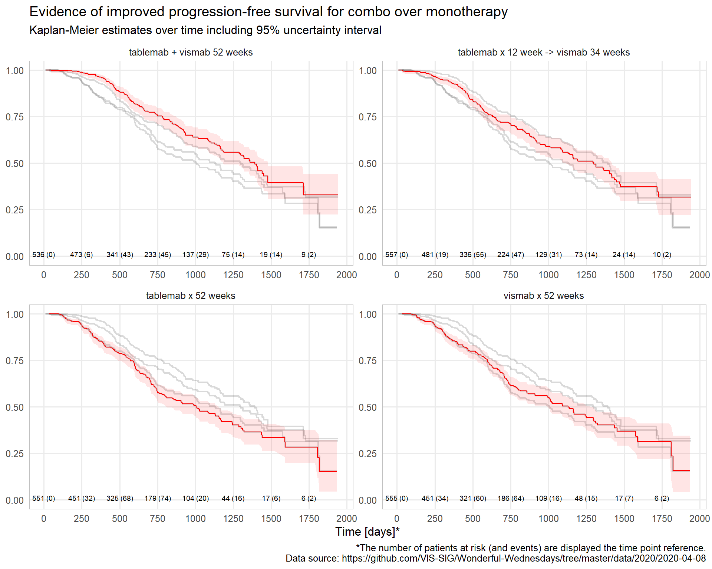

library(tidyverse)
#> Warning: package 'tidyverse' was built under R version 3.6.3
#> -- Attaching packages ---------------------- tidyverse 1.3.0 --
#> v ggplot2 3.3.0 v purrr 0.3.4
#> v tibble 3.0.1 v dplyr 0.8.5
#> v tidyr 1.0.2 v stringr 1.4.0
#> v readr 1.3.1 v forcats 0.5.0
#> Warning: package 'ggplot2' was built under R version 3.6.3
#> Warning: package 'tibble' was built under R version 3.6.3
#> Warning: package 'tidyr' was built under R version 3.6.3
#> Warning: package 'readr' was built under R version 3.6.3
#> Warning: package 'purrr' was built under R version 3.6.3
#> Warning: package 'dplyr' was built under R version 3.6.3
#> Warning: package 'stringr' was built under R version 3.6.3
#> Warning: package 'forcats' was built under R version 3.6.3
#> -- Conflicts ------------------------- tidyverse_conflicts() --
#> x dplyr::filter() masks stats::filter()
#> x dplyr::lag() masks stats::lag()
library(broom)
#> Warning: package 'broom' was built under R version 3.6.3
library(survival)
#> Warning: package 'survival' was built under R version 3.6.3
library(here)
#> Warning: package 'here' was built under R version 3.6.3
#> here() starts at C:/R/Projects/visR-mergedADTTE <- read_csv(here("data", 'psi-vissig-adtte.csv'))
#> Parsed with column specification:
#> cols(
#> STUDYID = col_character(),
#> SUBJID = col_double(),
#> USUBJID = col_character(),
#> AGE = col_double(),
#> STR01 = col_character(),
#> STR01N = col_double(),
#> STR01L = col_character(),
#> STR02 = col_character(),
#> STR02N = col_double(),
#> STR02L = col_character(),
#> TRT01P = col_character(),
#> TRT01PN = col_double(),
#> PARAM = col_character(),
#> PARAMCD = col_character(),
#> AVAL = col_double(),
#> CNSR = col_double(),
#> EVNTDESC = col_character(),
#> CNSDTDSC = col_character(),
#> DCTREAS = col_character()
#> )title <- "Evidence of improved progression-free survival for combo over monotherapy"
subtitle <- "Kaplan-Meier estimates over time including 95% uncertainty interval"
source <- "*The number of patients at risk (and events) are displayed the time point reference.
Data source: https://github.com/VIS-SIG/Wonderful-Wednesdays/tree/master/data/2020/2020-04-08"
y_axis <- "Progression free survival"
x_axis <- "Time [days]*"km <-
survfit(Surv(AVAL, CNSR == 0) ~ TRT01P,
data = ADTTE,
conf.type = 'log-log') %>%
broom::tidy(fit) %>%
dplyr::mutate(group = stringr::str_remove(strata, "TRT01P=")) %>%
dplyr::mutate(group = factor(
group,
levels = c(
"tablemab + vismab 52 weeks",
"tablemab x 12 week -> vismab 34 weeks",
"vismab x 52 weeks",
"tablemab x 52 weeks"
)
))This is a second data set to pass in for plotting ghost lines of each treatment
risk_data <-
tibble(
time = sumfit$time,
group = sumfit$strata,
n.risk = sumfit$n.risk,
n.events = sumfit$n.event
) %>%
dplyr::mutate(
group = stringr::str_remove(group, "TRT01P="),
label = paste0(n.risk, " (", n.events, ")"),
y_pos = 0.01,
group2 = group
)
risk_data %>% glimpse()
#> Rows: 32
#> Columns: 7
#> $ time <dbl> 0, 250, 500, 750, 1000, 1250, 1500, 1750, 0, 250, 500, 750...
#> $ group <chr> "tablemab + vismab 52 weeks", "tablemab + vismab 52 weeks"...
#> $ n.risk <dbl> 536, 473, 341, 233, 137, 75, 19, 9, 557, 481, 336, 224, 12...
#> $ n.events <dbl> 0, 6, 43, 45, 29, 14, 14, 2, 0, 19, 55, 47, 31, 14, 14, 2,...
#> $ label <chr> "536 (0)", "473 (6)", "341 (43)", "233 (45)", "137 (29)", ...
#> $ y_pos <dbl> 0.01, 0.01, 0.01, 0.01, 0.01, 0.01, 0.01, 0.01, 0.01, 0.01...
#> $ group2 <chr> "tablemab + vismab 52 weeks", "tablemab + vismab 52 weeks"...
km %>% ggplot(aes(x = time, y = estimate, group = group)) +
## draw the ghost lines of each treatment by facet. Force the group facet to null
geom_step(
data = transform(km_sm, group = NULL),
aes(x = time, y = estimate, group = group2),
size = 0.75,
color = "#000000",
alpha = 0.15
) +
## draw km lines
geom_ribbon(aes(ymin = conf.low, ymax = conf.high),
alpha = 0.1,
fill = "red") +
geom_step(color = "red") +
## draw risk set
geom_text(
data = risk_data,
mapping = aes(
x = time,
y = y_pos,
label = label,
group = group,
fill = NULL
),
size = 2.5
) +
## asthetics of the plot
scale_x_continuous(breaks = c(0, 250, 500, 750, 1000, 1250, 1500, 1750, 2000)) +
scale_y_continuous(breaks = c(0, 0.25, 0.50, 0.75, 1),
limits = c(0, 1)) +
## annotations
labs(title = title,
subtitle = subtitle,
caption = source) +
xlab(x_axis) +
ylab(y_axis) +
# set up basic theme
theme_minimal(base_size = 12) +
theme(
panel.grid.minor = element_blank(),
axis.title.y = element_blank(),
legend.position = "none"
) +
# Set the entire chart region to a light gray color
theme(panel.border = element_rect(color = "grey", fill = NA, size = 0.35)) +
facet_wrap( ~ group, scales = 'free', ncol = 2) 